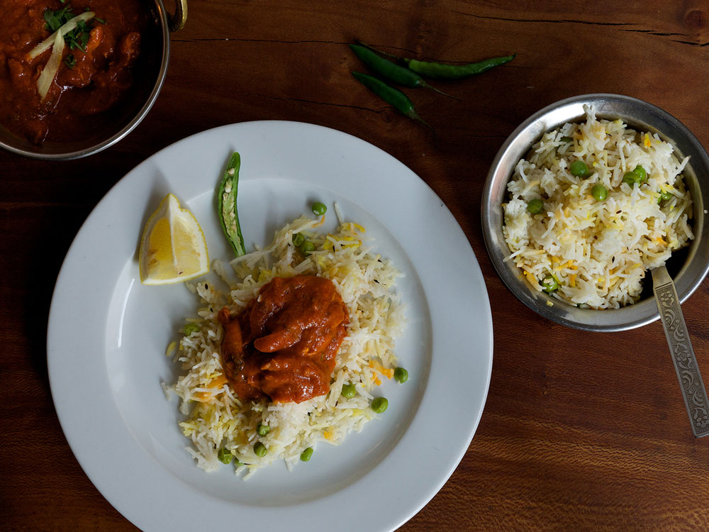

Alcuni classici del cibo di strada all'indiana.
-
Bagi (v)3,-
Verdure miste fritte in pastella di ceci
-
Samosa (v)3,5
Fagottini di patate e piselli in sfoglia
-
Papad Roll (v)3,5
Sfoglia di legumi ripiena di patate, formaggio e piselli
-
Pakora di Gamberetti 5,-
Delicata frittura di gamberetti
-
Tandoori Mix (v)10,-
Bocconcini di pollo misti cotti al forno
-
Antipasto Ganesh (v)18,-
Un po' di tutto per min. 2 persone
Come antipasto, o come accompagnamento ai secondi, cotto al momento nel nostro forno tandoori.
-
Roti (v)1,5
Pane di farina integrale
-
Naan (v)1,5
Pane di farina bianca
-
Butter naan (v)2,5
Pane di farina bianca con ghee
-
Garlic naan (v)2,5
Pane con aglio
-
Cheese naan(v)3,-
Focaccina di formaggio
-
Stuffed paratha (v)3,-
Pane integrale con patate e piselli
-
Bread basket (v)8,-
Cestino di pani misti
La parola curry non indica una spezia in particolare, ma una serie di specialità cotte in padella con diverse miscele di spezie chiamate masala.
-
Dal Fray (v)7,5
Diversi tipi di lenticchie con curcuma e cumino
-
Chana Masala (v ~ p)7,5
Ceci in salsa di cipolle e pomodoro
-
Aloo Palak (v)8,-
Purea di spinaci e patate speziate
-
Aloo Gobhi (v)8,-
Cavolfiore saltato con patate e semi di coriandolo
-
Mix Veg (v)9,-
Verdure stagionali in due versioni: piccante o delicata
-
Palak Paneer (v)9,-
Formaggio casalingo con cumino e purea di spinaci
-
Baingan Bharta (v ~ p)9,-
Polpa di melanzana affumicata al forno
-
Chicken Shahi 11,-
Bocconcini di pollo con salsa di panna e anacardi
-
Chicken Curry 9,5
Cosce di pollo disossate saltate con salse miste
-
Butter Chicken (p)10,5
Cosce di pollo disossate cotte nel forno tandoori e saltate in padella con salse e spezie miste
-
Chicken Tikka Masala (p)10,5
Bocconcini di pollo cotti nel forno tandoori e saltati in padella con karahi masala e spezie
-
Soovar Vindaloo (p)10,5
Il maiale a Goa si mangia così: saporito e piccante
-
Rogan Josh (p)10,5
Agnello in salsa piccante
-
Light Curry Shrimps (p)11,-
Gamberetti in salsa delicata di cocco e anacardi
-
Madras Shrimps(p)10,5-
Gamberetti saltati con pomodoro, semi di mostarda e foglie di curry
Carne o verdura, marinata per tutta la notte in yogurt e spezie, e cotte su uno spiedo nel forno tandoori.
-
Malai Tikka 10,-
Bocconcini di pollo marinati in panna e farina di cocco
-
Hariali Tikka 10,-
Bocconcini di pollo marinati in spinaci e menta
-
Chicken Tikka 10,-
Bocconcini di pollo marinati in spezie miste
-
Chicken Tandoori 10,-
Coscia di pollo marinata in spezie miste
-
Loli Pop Kebab 9,-
Ali di pollo marinate in spezie miste
-
Bharwa Aloo (v)9,-
Patata al forno ripiena
-
Paneer Tikka (v)9,5
Formaggio casalingo in salsa di yogurt
-
Gobhi Tandoori (v)8,-
Cavolfiori in salsa di yogurt speziata
-
Tandoori Platter 16,-
Assaggi misti di specialità tandoori
L'accompagnamento ideale per ogni tipo di curry.
-
Basmati (v)3,-
Riso tipico a grano lungo
-
Pulao 3,5
Riso saltato con piselli e zafferano
-
Biryani con verdure(v)8,-
Riso saltato con verdure
-
Biryani con pollo10,-
Riso saltato con pollo
-
Biryani con gamberetti12,-
Riso saltato con gamberetti
-
Biryani con salsa raita(v)+3,-
Piccola intro per i menu
-
Menù di Carne 25,-
Tandoori mix, un pane a scelta, un curry di carne a scelta, riso e dolce
-
Menù(v)
vegetariano 20,-Bagi e samosa, un pane a scelta, un curry vegetariano a scelta, riso e dolce
-
Menù bambini 14,-
Crocchette di pollo, patatine, cheese naan, riso, dolce e bevanda
22/10 - 22/11
Piatto Speciale
Crocchette di pollo, patatine, cheese naan, riso, dolce e bevanda Crocchette di pollo, patatine, cheese naan, riso, dolce e bevanda
